Rebuilding DriverConnect's onboarding into a guided, task-driven flow so truck drivers and fleets pair their electronic logging device (ELD) correctly the first time — cutting setup-related support requests 50%.
DriverConnect is a fleet-management product in Rand McNally's commercial line, used by truck drivers, fleet managers, and owner-operators to handle compliance, daily operations, and the constant back-and-forth between the cab and the office.
The product was shipping fast with heavy C-suite involvement, but two things were quietly costing the business: new customers struggled to get set up correctly, and drivers and fleet managers had no reliable way to communicate inside the product. I owned the design work on both — rebuilding onboarding into a guided, task-driven flow, and designing an in-app messaging feature that moved fleet–driver coordination out of phone calls, texts, and paper. This case study focuses on the onboarding rebuild.
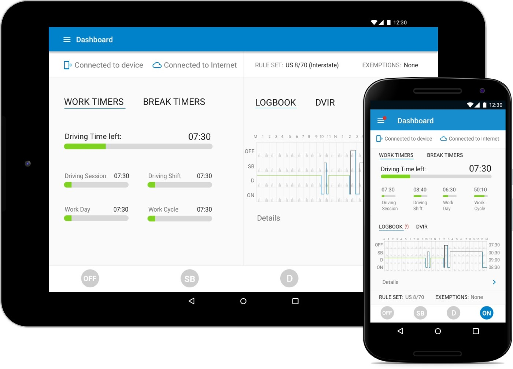
DriverConnect was being built at speed, and one problem surfaced again and again in support tickets and stakeholder conversations: onboarding was confusing and ineffective. New customers frequently set themselves up wrong — or gave up — before they ever reached daily use.
A problem that matters most for a fleet product: the early days of a customer relationship, when a bad experience turns into a cancelled account or a flood of support calls.
The shared thread: both groups need to get going fast and stay coordinated, and friction at either point creates real operational and compliance risk.
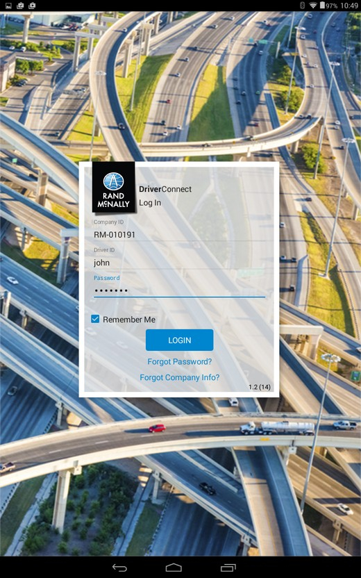
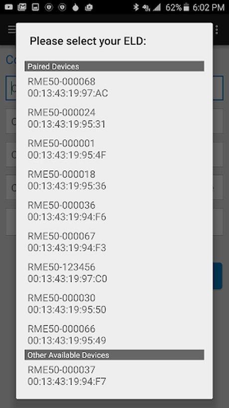
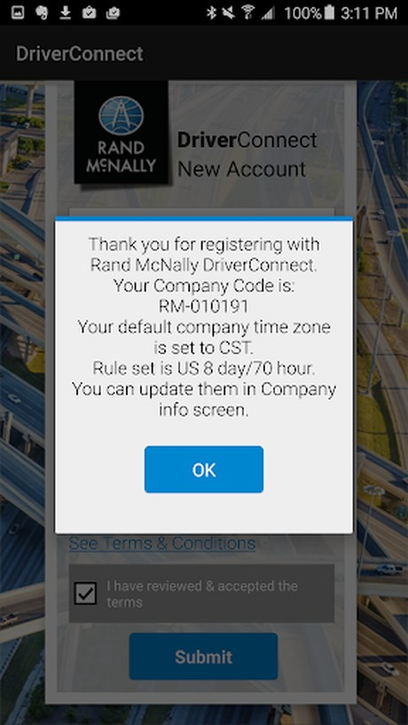
Setup was also followed by a static, tap-through feature tour — informative in theory, but easy to skip and easy to forget, so the steps that mattered slipped right past new users.
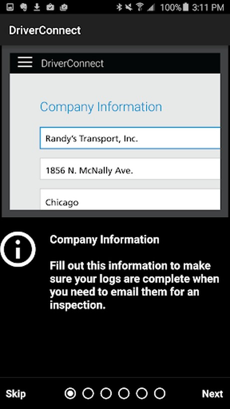
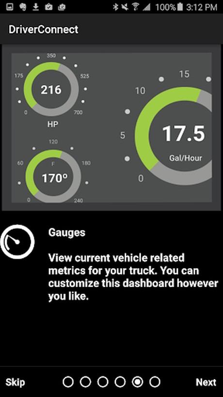
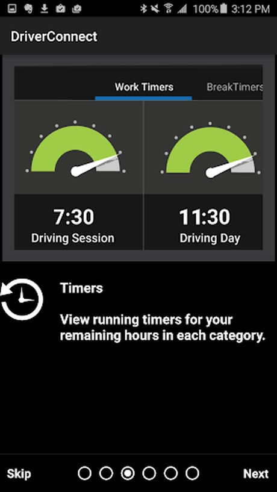
Goal: a guided, actionable flow that helps users complete setup correctly, reduces support dependency, and gets drivers operational faster without overwhelming them. The hardest question was what to ask the user to do first. I sketched three approaches:
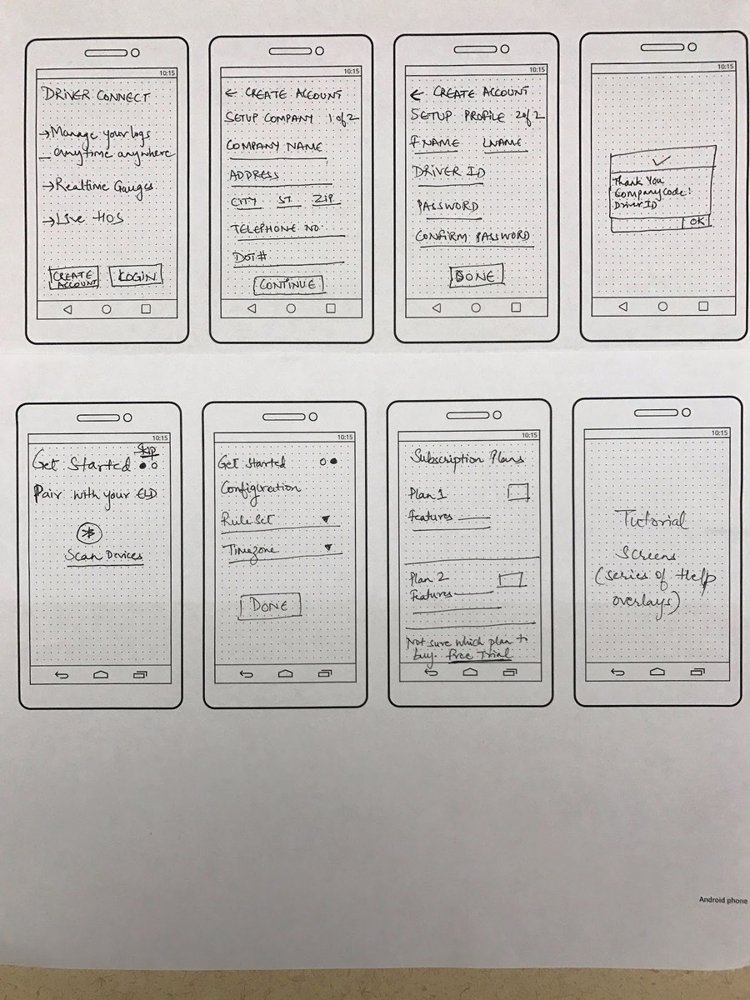
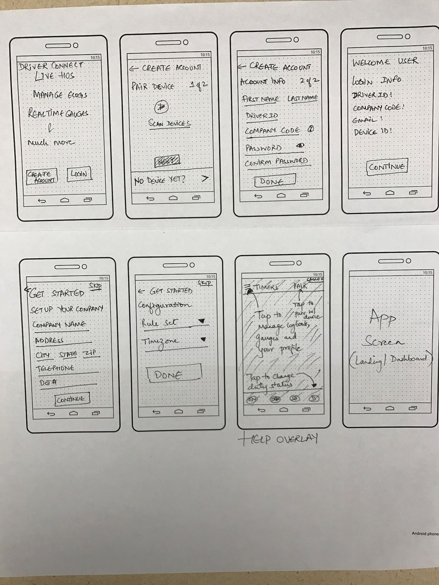
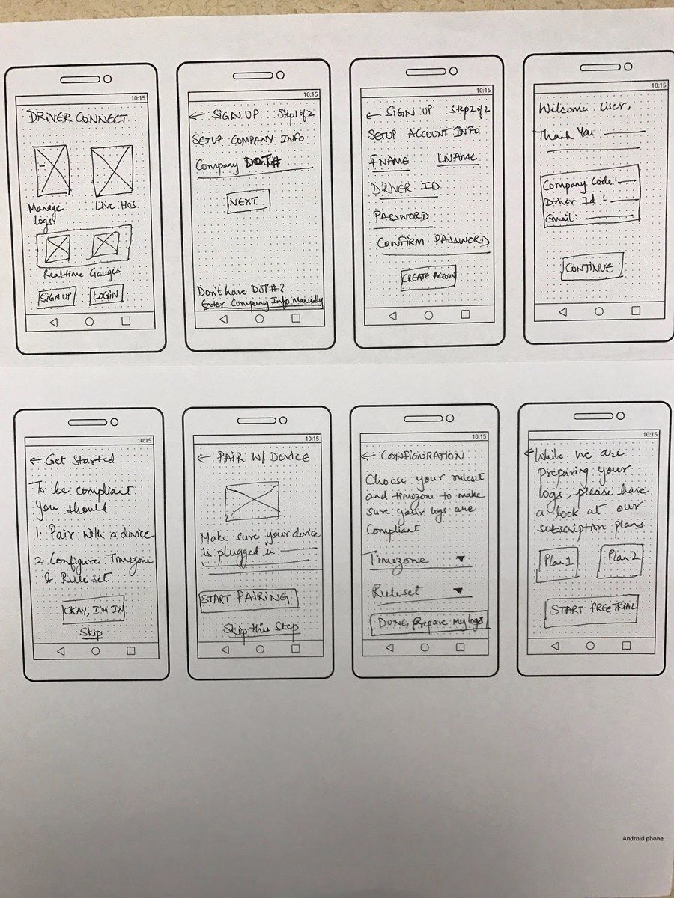
I landed on the DOT#-driven path. It directly solved the most expensive problem — fragmented accounts and manual fleet setup — by letting a user join the correct existing fleet from a single, familiar number instead of accidentally spinning up a duplicate company. Where the other options reduced friction at one step, this one removed an entire class of support tickets.
I worked closely with engineering to prototype and test the flows, and iterated on real user feedback before final implementation. Usability testing validated that:
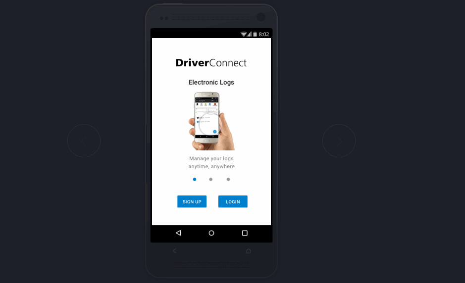
The biggest win didn't come from polishing a screen — it came from choosing what to ask first. Anchoring setup on a number drivers already know (their DOT#) quietly erased the duplicate-account problem before it could start. In onboarding, the cheapest fixes usually live upstream of the screen where the pain shows up.